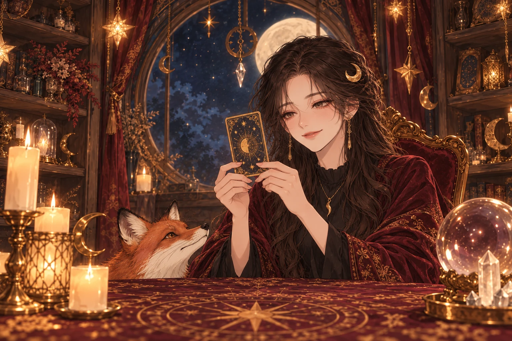
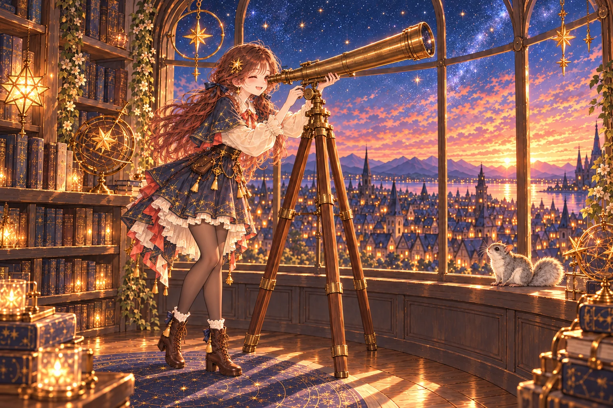

해의 가게
혜화 사주
햇살 드는 한옥 방에서 태어난 날과 시로 명식을 세우고, 혜화가 한 해의 흐름과 타고난 결을 풀어 드려요.
- ☀신년운세다가올 한 해를 달마다, 날씨처럼 읽어요.
- ✎종합사주타고난 성향과 일·돈·사랑의 큰 흐름.
- ❦궁합점수 대신 잘 맞는 점, 엇갈리는 점, 서로 챙길 점.
- ◎내 사주 보기 · 오늘의 운세네 기둥을 직접 세워 보고, 오늘 하루를 가볍게.
해·달·별
세 자매가 가게를 연 골목
사주는 해의 혜화, 타로는 달의 월화, 별자리는 별의 유화. 세 상담사가 같은 골목에서 가게를 열어요.
해의 가게
햇살 드는 한옥 방에서 태어난 날과 시로 명식을 세우고, 혜화가 한 해의 흐름과 타고난 결을 풀어 드려요.

달의 가게
고민을 고르면 월화가 오늘 볼 질문을 먼저 알려 줘요. 질문마다 78장 중에서 직접 카드를 뽑고, 다 뽑으면 한 장씩 같이 읽어요.

별의 가게
태어난 날의 하늘을 그대로 펼친 출생 차트에서, 유화가 서양 점성술로 별을 하나씩 이어 가며 읽어 드려요. 태어난 시간을 몰라도 볼 수 있어요.
풀이 예시
진짜 손님 대신 세 상담사에게 생일과 고민을 정해 주고, 서로의 가게에서 풀어 봤어요. 손님이 받는 것과 같은 방식으로 만든 실제 풀이를 그대로 보여 드려요.
자주 묻는 질문
카드마다 정리한 해석 단서, 만세력으로 계산한 명식, 태어난 날의 천체 위치 같은 근거가 먼저 있고, AI가 그 근거로 질문에 맞는 풀이를 써요. 같은 질문이어도 근거가 다르면 풀이가 달라져요.
고민과 생년월일은 풀이를 만드는 동안만 맡아 두고, 다 만들면 바로 지워요. 다 받기 전에 끊기면 이어 받을 수 있게 최대 30일까지만 둬요. 다 만든 풀이는 이름을 빼고 1년 동안 보관해서, 결제 뒤 드리는 링크로 언제든 다시 볼 수 있어요. 고민에 적은 내용이 풀이에 담겨 함께 보관될 수 있는데, 다른 사람의 이름은 '상대방 분'으로 바꿔 써요. 링크에서 직접 지울 수도 있어요.
자동으로 다시 시도해요. 그래도 멈추면 받은 링크로 들어와 멈춘 곳부터 이어서 받을 수 있어요. 풀이를 하나도 받기 전에 멈췄다면 결제를 자동으로 취소해 드려요.
지금의 마음과 흐름을 다른 각도에서 비춰 보는 재미로 봐 주세요. 결정은 늘 본인의 몫이고, 건강·돈·법률처럼 중요한 일은 전문가와 함께 정하세요.
가게마다 오늘의 운세는 무료예요. 상담사와 인사하고 어떤 질문을 보게 될지도 결제 전에 들어 볼 수 있어요.
운세는 지금의 마음과 흐름을 다른 각도에서 비춰 보는 재미로 봐 주세요. 결정은 늘 본인의 몫이에요.
☾나도 물어보기세 자매와 동물 친구들은 이 골목의 이야기 속 인물이에요.
☾가게로 가기